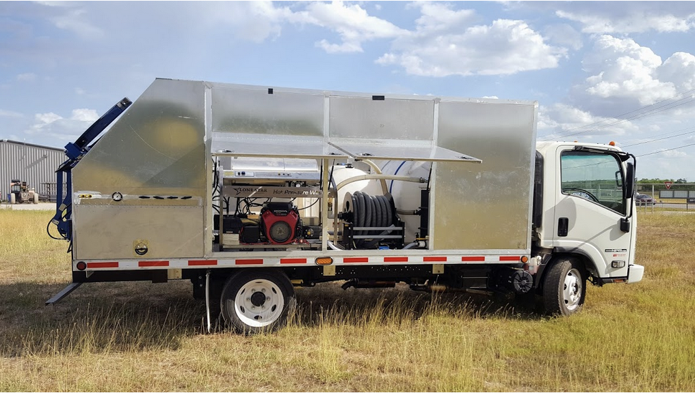
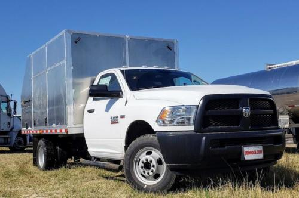
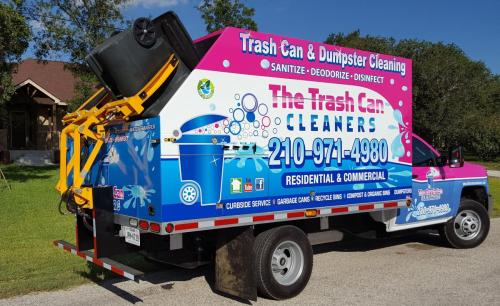

Our Showcase
Discover our range of professional-grade bin cleaning systems designed for efficiency, durability, and profitability. Each unit is built to handle high-volume routes while maintaining consistent quality results.
Our wheelie bin cleaning systems use a combination of hot water and high-pressure sanitizing to thoroughly clean and disinfect trash bins in seconds. The process is both efficient and eco-friendly, using advanced wastewater recovery systems to minimize environmental impact.
Each unit is designed to deliver powerful cleaning performance while maintaining water efficiency. The hot water helps break down grease and grime, while the high-pressure system ensures complete sanitization, leaving bins clean, fresh, and odor-free.
With our equipment, you can clean multiple bins quickly, making it perfect for residential routes and commercial applications. The wastewater recovery system ensures responsible water usage, making this an environmentally conscious business opportunity.
We have multiple financing options available to help start or expand trash bin cleaning businesses. There are several ways to get someone started in the business, whether it's a brand new build on a new chassis, a used bin cleaning system that needs upgrades, or adding our system to an existing truck.
Flexible funding paths designed to match your growth, cash flow, and fleet plans.
Get a custom quote and consultation to start your bin cleaning business journey.
Get a Quote